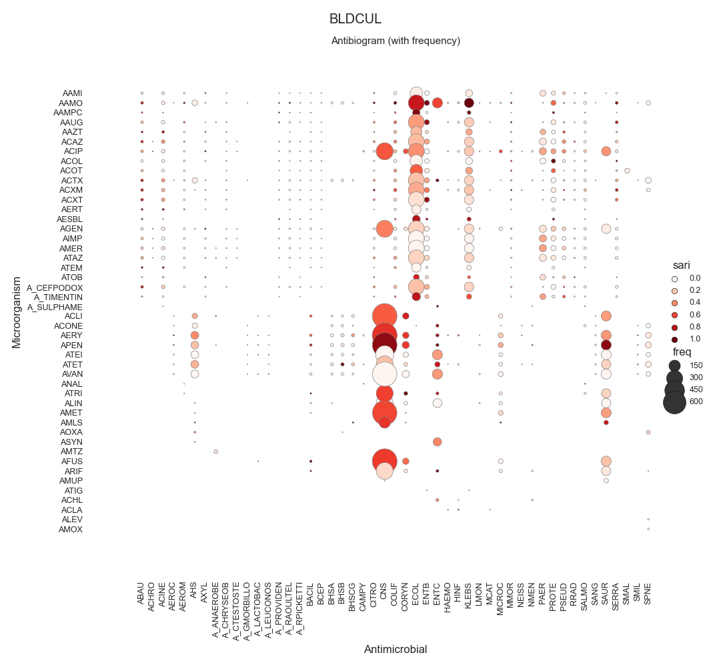
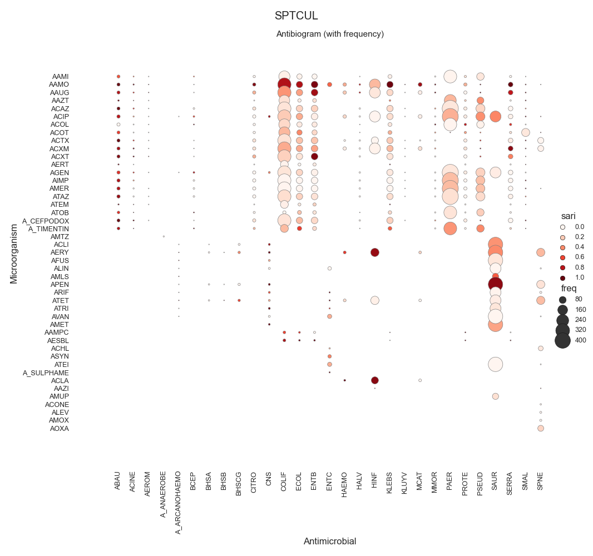
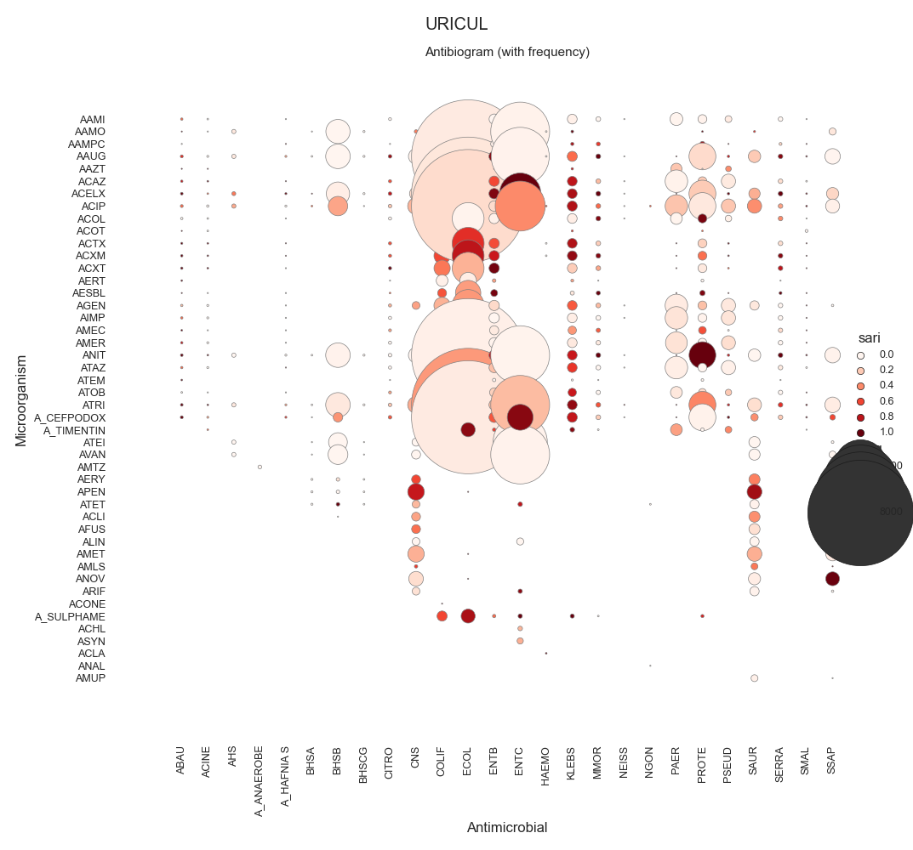
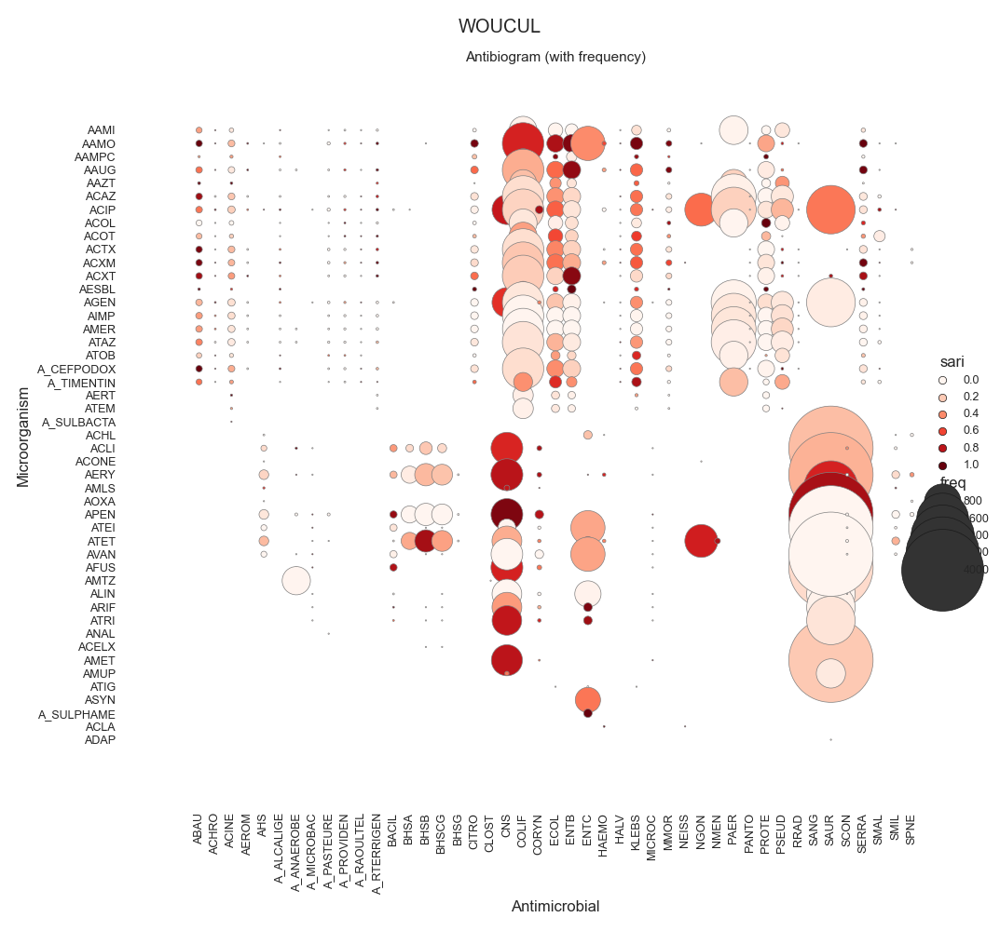
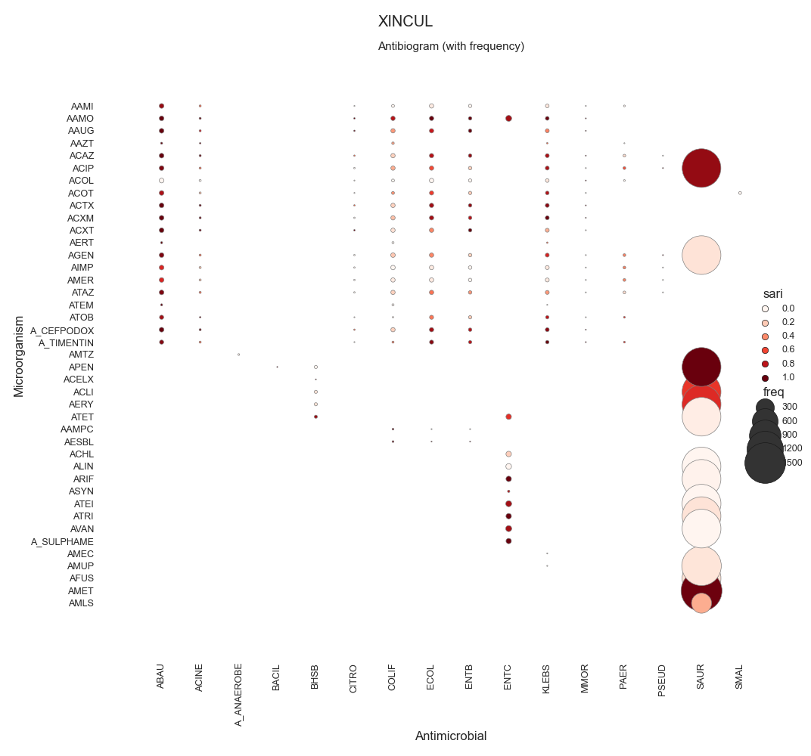

Note
Go to the end to download the full example code
SARI - By specimen w/ sns.relmap
Todo
Explain…
- 
- 
- 
- 
- 
Data:
date_received date_outcome patient_id laboratory_number specimen_code specimen_name specimen_description ... microorganism_name antimicrobial_code antimicrobial_name sensitivity_method sensitivity mic reported
0 2009-01-03 NaN 20091 X428501 BLDCUL NaN blood ... klebsiella AAMI amikacin NaN sensitive NaN NaN
1 2009-01-03 NaN 20091 X428501 BLDCUL NaN blood ... klebsiella AAMO amoxycillin NaN resistant NaN NaN
2 2009-01-03 NaN 20091 X428501 BLDCUL NaN blood ... klebsiella AAUG augmentin NaN sensitive NaN NaN
3 2009-01-03 NaN 20091 X428501 BLDCUL NaN blood ... klebsiella AAZT aztreonam NaN sensitive NaN NaN
4 2009-01-03 NaN 20091 X428501 BLDCUL NaN blood ... klebsiella ACAZ ceftazidime NaN sensitive NaN NaN
... ... ... ... ... ... ... ... ... ... ... ... ... ... .. ...
319117 2009-12-31 NaN 24645 H2012337 BLDCUL NaN blood ... enterococcus AAMO amoxycillin NaN sensitive NaN NaN
319118 2009-12-31 NaN 24645 H2012337 BLDCUL NaN blood ... enterococcus ALIN linezolid NaN sensitive NaN NaN
319119 2009-12-31 NaN 24645 H2012337 BLDCUL NaN blood ... enterococcus ASYN synercid NaN resistant NaN NaN
319120 2009-12-31 NaN 24645 H2012337 BLDCUL NaN blood ... enterococcus ATEI teicoplanin NaN sensitive NaN NaN
319121 2009-12-31 NaN 24645 H2012337 BLDCUL NaN blood ... enterococcus AVAN vancomycin NaN sensitive NaN NaN
[319122 rows x 15 columns]
Columns:
Index(['date_received', 'date_outcome', 'patient_id', 'laboratory_number', 'specimen_code', 'specimen_name', 'specimen_description', 'microorganism_code', 'microorganism_name', 'antimicrobial_code', 'antimicrobial_name', 'sensitivity_method', 'sensitivity', 'mic', 'reported'], dtype='object')
SARI (overall):
intermediate resistant sensitive freq sari
specimen_code microorganism_code antimicrobial_code
BFLCUL AHS ACHL 0.0 0.0 1.0 1.0 0.0000
ACLI 0.0 0.0 2.0 2.0 0.0000
ACTX 0.0 0.0 1.0 1.0 0.0000
AERY 0.0 1.0 1.0 2.0 0.5000
APEN 0.0 0.0 2.0 2.0 0.0000
... ... ... ... ... ...
XINCUL SAUR ATEI 0.0 0.0 1365.0 1365.0 0.0000
ATET 0.0 67.0 1288.0 1355.0 0.0494
ATRI 0.0 145.0 1213.0 1358.0 0.1068
AVAN 0.0 0.0 1364.0 1364.0 0.0000
SMAL ACOT 0.0 0.0 8.0 8.0 0.0000
[4491 rows x 5 columns]
Cultures:
specimen_code
URICUL 116627.0
WOUCUL 94918.0
XINCUL 21427.0
SPTCUL 21113.0
BLDCUL 20333.0
ENTCUL 13110.0
T&FCUL 8150.0
MRSCUL 7865.0
VAGCUL 7425.0
EYECUL 2839.0
GUMCUL 1634.0
FAECUL 1317.0
URECUL 802.0
TISCUL 474.0
BFLCUL 450.0
SEMCUL 290.0
NEOCUL 213.0
PDFCUL 68.0
CSFCUL 32.0
RGNS 20.0
FUNSTC 14.0
TBCUL 1.0
Name: freq, dtype: float64
C:\Users\kelda\Desktop\repositories\github\pyAMR\main\examples\indexes\plot_sari_c_relmap.py:154: MatplotlibDeprecationWarning:
The legendHandles attribute was deprecated in Matplotlib 3.7 and will be removed two minor releases later. Use legend_handles instead.
C:\Users\kelda\Desktop\repositories\github\pyAMR\main\examples\indexes\plot_sari_c_relmap.py:154: MatplotlibDeprecationWarning:
The legendHandles attribute was deprecated in Matplotlib 3.7 and will be removed two minor releases later. Use legend_handles instead.
C:\Users\kelda\Desktop\repositories\github\pyAMR\main\examples\indexes\plot_sari_c_relmap.py:154: MatplotlibDeprecationWarning:
The legendHandles attribute was deprecated in Matplotlib 3.7 and will be removed two minor releases later. Use legend_handles instead.
C:\Users\kelda\Desktop\repositories\github\pyAMR\main\examples\indexes\plot_sari_c_relmap.py:154: MatplotlibDeprecationWarning:
The legendHandles attribute was deprecated in Matplotlib 3.7 and will be removed two minor releases later. Use legend_handles instead.
C:\Users\kelda\Desktop\repositories\github\pyAMR\main\examples\indexes\plot_sari_c_relmap.py:154: MatplotlibDeprecationWarning:
The legendHandles attribute was deprecated in Matplotlib 3.7 and will be removed two minor releases later. Use legend_handles instead.
9 # Libraries
10 import sys
11 import numpy as np
12 import pandas as pd
13 import seaborn as sns
14 import matplotlib as mpl
15 import matplotlib.pyplot as plt
16
17 # Import own libraries
18 from pyamr.core.sari import SARI
19 from pyamr.core.freq import Frequency
20 from pyamr.datasets.load import make_susceptibility
21
22 # -------------------------
23 # Configuration
24 # -------------------------
25 # Configure seaborn style (context=talk)
26 sns.set(style="white")
27
28 # Set matplotlib
29 mpl.rcParams['xtick.labelsize'] = 9
30 mpl.rcParams['ytick.labelsize'] = 9
31 mpl.rcParams['axes.titlesize'] = 11
32 mpl.rcParams['legend.fontsize'] = 9
33
34 # Pandas configuration
35 pd.set_option('display.max_colwidth', 40)
36 pd.set_option('display.width', 300)
37 pd.set_option('display.precision', 4)
38
39 # Numpy configuration
40 np.set_printoptions(precision=2)
41
42 # -------------------------------------------
43 # Methods
44 # -------------------------------------------
45 def create_mapper(dataframe, column_key, column_value):
46 """This method constructs a mapper
47
48 Parameters
49 ----------
50 dataframe: dataframe-like
51 The dataframe from which the columns are extracted
52
53 column_key: string-like
54 The name of the column with the values for the keys of the mapper
55
56 column_value: string-like
57 The name of the column with the values for the values of the mapper
58
59 Returns
60 -------
61 dictionary
62 """
63 dataframe = dataframe[[column_key, column_value]]
64 dataframe = dataframe.drop_duplicates()
65 return dict(zip(dataframe[column_key], dataframe[column_value]))
66
67
68 # -------------------------------------------
69 # Load data
70 # -------------------------------------------
71 # Load data
72 data = make_susceptibility()
73
74 # Show
75 print("\nData:")
76 print(data)
77 print("\nColumns:")
78 print(data.columns)
79
80 # -------------------------------------------
81 # Compute SARI
82 # -------------------------------------------
83 # Libraries
84 from pyamr.core.sari import SARI
85
86 # Create sari instance
87 sari = SARI(groupby=['specimen_code',
88 'microorganism_code',
89 'antimicrobial_code',
90 'sensitivity'])
91
92 # Compute SARI overall
93 sari_overall = sari.compute(data,
94 return_frequencies=True)
95
96 # Show
97 print("SARI (overall):")
98 print(sari_overall)
99
100
101 # -------------------------------------------
102 # Plot
103 # -------------------------------------------
104 # Reset
105 sari_overall = sari_overall.reset_index()
106
107 # Count records per specimen
108 specimen_count = sari_overall \
109 .groupby('specimen_code').freq.sum() \
110 .sort_values(ascending=False)
111
112 # Show
113 print("Cultures:")
114 print(specimen_count)
115
116 # Filter
117 sari_overall = sari_overall[sari_overall \
118 .specimen_code.isin( \
119 specimen_count.index.values[:5])]
120
121 # Loop
122 for specimen, df in sari_overall.groupby(by='specimen_code'):
123
124 # ------------
125 # Plot Heatmap
126 # ------------
127 # Create colormap
128 cmap = sns.color_palette("Reds", desat=0.5, n_colors=10)
129
130 # Configura
131 sizes = (df.freq.min(), df.freq.max())
132
133 # Plot
134 g = sns.relplot(data=df.reset_index(), x='microorganism_code',
135 y='antimicrobial_code', hue="sari", size="freq",
136 palette='Reds', hue_norm=(0, 1), edgecolor="gray",
137 linewidth=0.5, sizes=sizes, # size_norm=sizes,
138 dashes=True, legend='brief', height=10)
139
140 # Configure plot
141 g.set(xlabel="Antimicrobial",
142 ylabel="Microorganism",
143 title='Antibiogram (with frequency)',
144 #aspect='equal'
145 )
146 g.despine(left=True, bottom=True)
147 g.ax.margins(.1)
148
149 # Configure xticks
150 for label in g.ax.get_xticklabels():
151 label.set_rotation(90)
152
153 # Configure legend
154 for artist in g.legend.legendHandles:
155 artist.set_edgecolor("k")
156 artist.set_linewidth(0.5)
157
158 # Superior title
159 plt.suptitle(specimen)
160
161 # Add grid lines.
162 # plt.grid(linestyle='-', linewidth=0.5, color='.7')
163
164 # Adjust
165 plt.tight_layout()
166
167 # Show
168 plt.show()
Total running time of the script: ( 0 minutes 5.216 seconds)